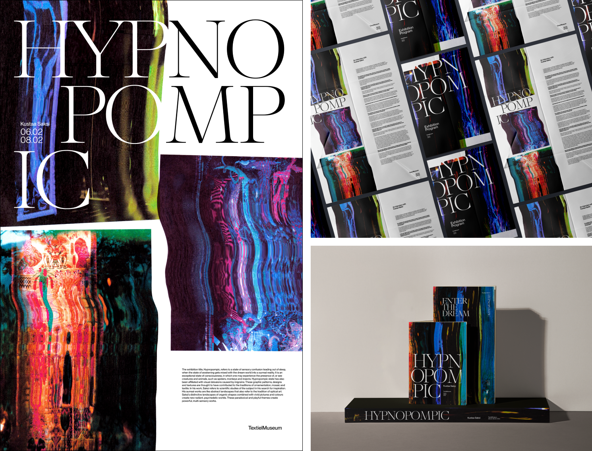
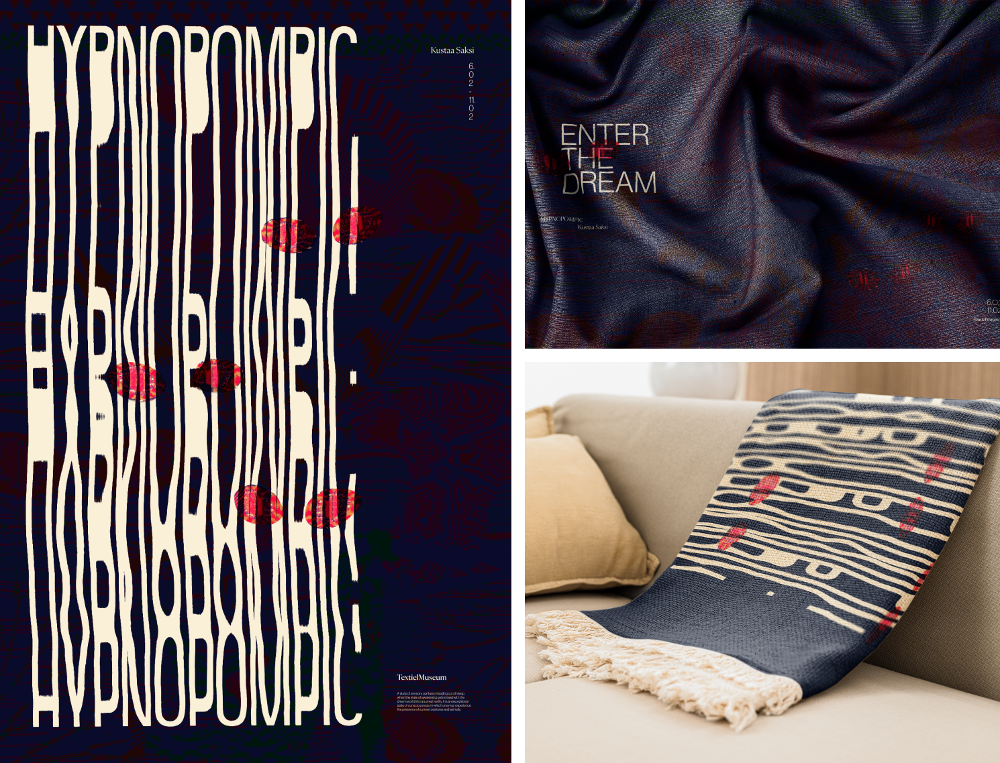

In this project my group of 5 and I created a microsite to accompany an exhibition of 8 tapestries hosted and created in collaboration with our client, the TextielMusem in the Netherlands. Each tapestry tells a different story of a hypnopompic (between sleep and waking) hallucination experienced by the artist. The site walks users through the narrative, materials, and processes used to create the tapestries, enhancing understanding and appreciation, while also conveying the eerie and surreal tone of the exhibition. The full tapestries are never shown, instead, the site displays a series of zoomed-in views of the tapestry details, encouraging viewers to visit the exhibition after gaining increased knowledge and context about the works to see the full picture.
The project began by studying the work of precedent designers Chris Ashworth and Ellen Lupton to extract design qualities and principles to guide the design process. These were then used in three weeks of graphic exploration, expressed first as posters and then graphic assets, culminating in the creation of three distinct art direction strategies. Three initial microsites were created adapting these strategies to the web medium, and the content approach and structure of all three were combined into the final microsite.


In this project I did the majority of the visual design, creating most of the posters, assets, microsite layout, and prototyping in Figma. Applying visual identities to diverse applications through graphic assets and microsites taught me about art direction, and how to create consistency through different contexts. I also learned about content strategy through the posters and microsites, and through the creation of slides to present our week for crit each week. Studying precedent designers was also an invaluable part of this project, and I will continue to do image groupings to gain understanding of specific methods of design in structural and semantic approaches.
view final presentation slidesThe project was presented as a final slide deck including a detailed walkthrough and process explanation.